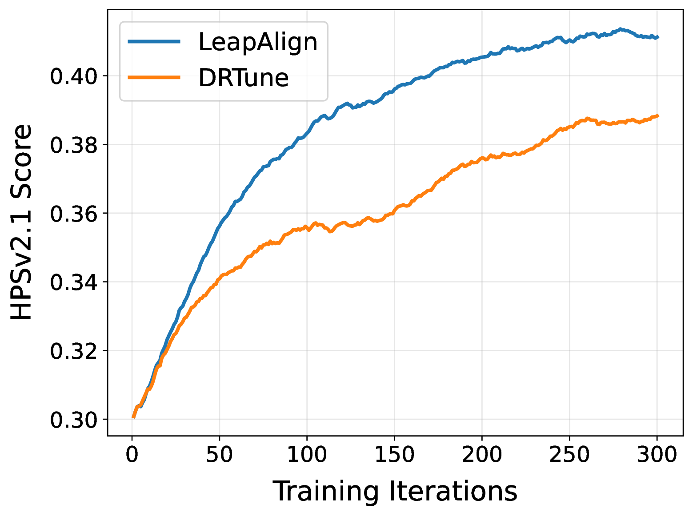
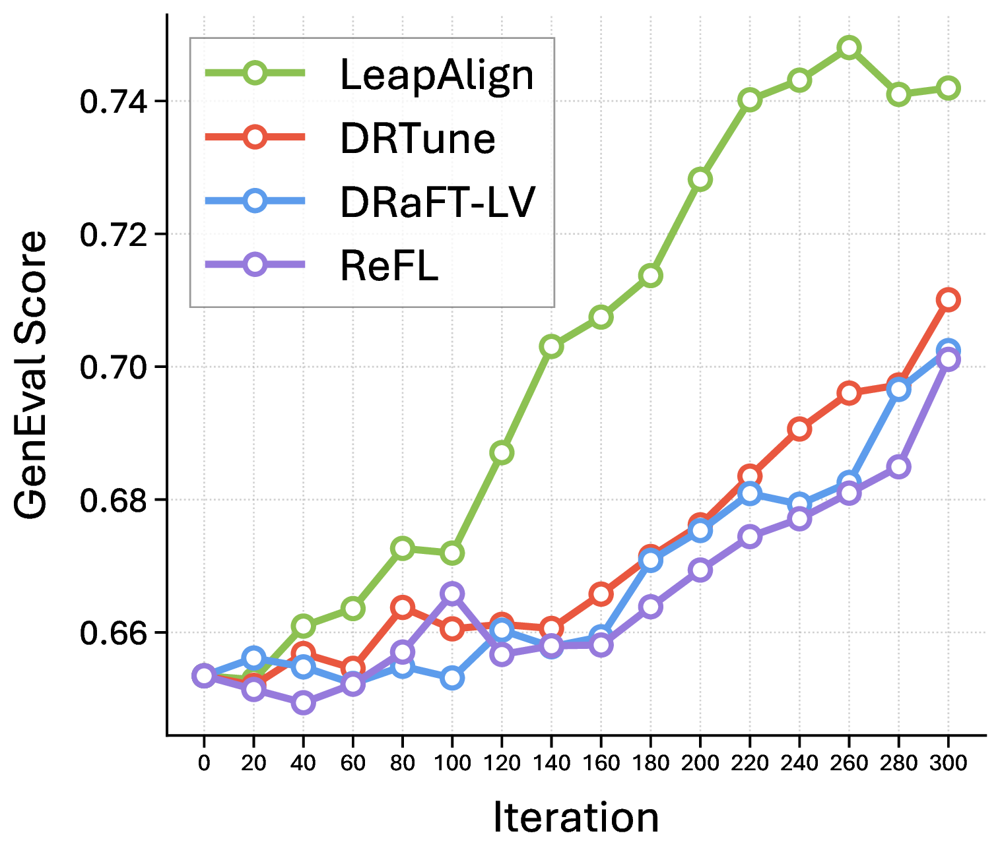
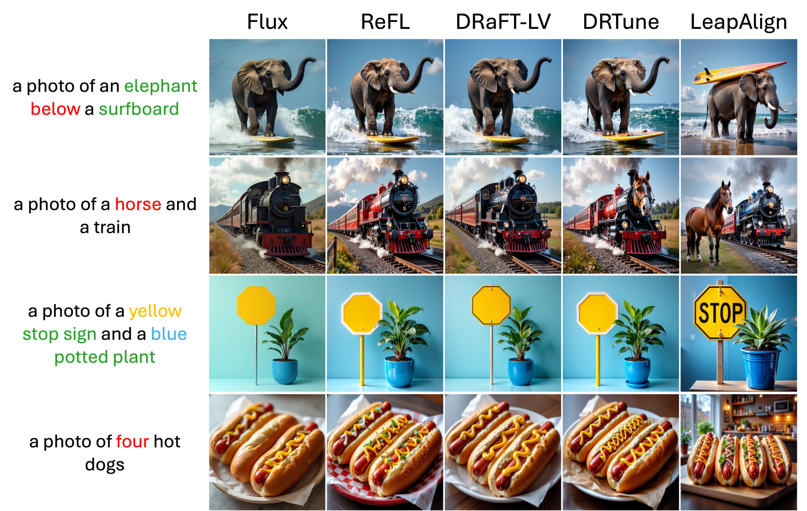

LeapAlign: Post-Training Flow Matching Models
at Any Generation Step by Building Two-Step Trajectories
TL;DR: LeapAlign constructs a two-step leap trajectory from a full generation trajectory for efficient reward gradient backpropagation. It enables fine-tuning at any generation step without incurring excessive memory cost or gradient explosion. LeapAlign shows strong performance in aligning flow matching models with general human preferences and improving image-text alignment.
Overview
Text-to-image flow matching models can be fine-tuned by directly backpropagating reward gradients through differentiable sampling trajectories. However, full-trajectory backpropagation is memory-intensive and prone to gradient explosion. Existing methods either update only late generation steps[1], [2], missing early steps that control image layout, or stop gradients at the model input, discarding gradient terms that reflect interaction between steps[3].
LeapAlign constructs a two-step leap trajectory from a full trajectory and backpropagates reward gradients through this shortened path. This enables updates at any generation step, while gradient discounting retains gradient terms that reflect interaction between steps and stabilizes training.
Our contributions are as follows:
- We propose LeapAlign, which trains on a two-step leap trajectory carved from a full run. This reduces memory cost and allows model updates at any generation step.
- We further propose two techniques for improvement. We assign leap trajectories higher weights if they are similar to the real path. We also scale down gradient terms that potentially have a large magnitude instead of completely removing them, preserving their usefulness.
- LeapAlign stably fine-tunes Flux and consistently outperforms existing post-training methods in improving image generation quality and image-text alignment.
Method

Leap Trajectory Construction
We randomly select two timesteps \(k\) and \(j\) from the generation trajectory, where \(k > j\). We then construct the leap trajectory as:
This process forms a two-step leap trajectory:
The solid blue arrows denote one-step leap predictions by the flow matching model, while the dashed orange arrows denote latent connectors that align predicted latents with real latents. Reward gradients are backpropagated through the leap trajectory instead of the full generation trajectory. Because \(k\) and \(j\) are randomly selected, LeapAlign can fine-tune any generation step.
Gradient Discounting
Backpropagating through the leap trajectory gives the following gradient:
The nested gradient is useful for capturing interactions across different generation steps, but it can have a large magnitude. To control it, we introduce gradient discounting. With a discounting factor \(\alpha \in [0, 1]\), we modify the second one-step leap prediction:
The gradient then becomes:
By adjusting \(\alpha\), we can moderate the gradient magnitude without discarding any component of the gradient flow. This, together with the leap trajectory design, stabilizes optimization while retaining full learning signals.
Fine-Tuning Objective
To reduce reward hacking and prevent unstable optimization toward excessively high or misleading reward values, we use a simple hinge-style objective:
We evaluate the reward using the generated image \(x_0\), which directly reflects the output quality of the full generation trajectory. This allows the reward model to make more faithful assessments of visual and semantic quality, providing reliable supervision signals for fine-tuning.
Trajectory-Similarity Weighting
To emphasize leap trajectories that better match the original generation dynamics and provide reliable training signals, we introduce trajectory-similarity weighting. We measure similarity by the average absolute difference between predicted states \(\hat{x}\) and actual states \(x\) at the two connection points:
To avoid overemphasizing near-identical pairs, we clamp each distance with a minimum value \(\tau\) and define the weighting factor as:
The final objective is formulated as:
Experimental Results
General Preference Alignment
General preference alignment on Flux with HPSv2.1 as reward. † MixGRPO is fine-tuned using HPSv2.1, PickScore, and ImageReward as reward models for general preference alignment experiments.
| Method | In-Domain | Out-of-Domain | ||||
|---|---|---|---|---|---|---|
| HPSv2.1 ↑ | HPSv3 ↑ | PickScore ↑ | UnifiedReward Alignment ↑ | UnifiedReward Image-Quality ↑ | ImageReward ↑ | |
| Pretrained Model | ||||||
| Flux | 0.3078 | 13.5020 | 22.7902 | 3.4514 | 3.5708 | 1.0455 |
| Policy-Gradient-Based Methods | ||||||
| DanceGRPO | 0.3451 | 14.8336 | 23.1186 | 3.4660 | 3.6199 | 1.2347 |
| MixGRPO† | 0.3692 | 14.7530 | 23.5184 | 3.4393 | 3.6241 | 1.6155 |
| Direct-Gradient Methods | ||||||
| ReFL | 0.3852 | 15.5127 | 23.6299 | 3.4786 | 3.6870 | 1.3468 |
| DRaFT-LV | 0.3859 | 15.3699 | 23.6437 | 3.4868 | 3.6887 | 1.3384 |
| DRTune | 0.3882 | 15.5606 | 23.5185 | 3.4793 | 3.6679 | 1.3562 |
| LeapAlign | 0.4092 | 15.7678 | 23.7137 | 3.4984 | 3.7244 | 1.5104 |
LeapAlign achieves the best scores on HPSv2.1, HPSv3, PickScore, UnifiedReward-Alignment, and UnifiedReward-Image-Quality. Although MixGRPO jointly uses three reward models, LeapAlign is trained only with HPSv2.1 and still obtains higher HPSv2.1 and PickScore scores while remaining competitive on ImageReward. Overall, LeapAlign delivers consistent in-domain and out-of-domain gains in human preference alignment, image-text consistency, and image quality.
Compositional Alignment
Compositional alignment on the GenEval benchmark with Flux as the base model and HPSv2.1 as the reward.
| Method | GenEval Benchmark | ||||||
|---|---|---|---|---|---|---|---|
| Overall ↑ | Single Object ↑ | Two Objects ↑ | Counting ↑ | Colors ↑ | Position ↑ | Attribute Binding ↑ | |
| Pretrained Model | |||||||
| Flux | 0.6535 | 99.38 | 86.62 | 66.88 | 74.47 | 19.50 | 45.25 |
| Policy-Gradient-Based Methods | |||||||
| DanceGRPO | 0.6775 | 99.38 | 90.15 | 69.38 | 76.33 | 22.25 | 49.00 |
| MixGRPO | 0.7232 | 99.69 | 93.69 | 80.00 | 80.05 | 24.25 | 56.25 |
| Direct-Gradient Methods | |||||||
| ReFL | 0.7011 | 99.38 | 92.68 | 69.06 | 75.80 | 26.75 | 57.00 |
| DRaFT-LV | 0.7024 | 99.69 | 92.42 | 74.06 | 75.53 | 24.00 | 55.75 |
| DRTune | 0.7101 | 99.38 | 93.69 | 73.12 | 76.86 | 27.50 | 55.50 |
| LeapAlign | 0.7420 | 99.38 | 96.46 | 72.50 | 80.59 | 30.25 | 66.00 |
LeapAlign achieves the highest overall GenEval score, 0.7420, compared with 0.7232 for MixGRPO, the strongest policy-gradient-based baseline, and 0.7101 for DRTune, the strongest direct-gradient baseline. It shows strong performance under the ‘two objects’, ‘colors’, ‘position’, and ‘attribute binding’ categories. Since MixGRPO can use policy gradients to update early steps, and DRTune can also fine-tune early steps but discards critical gradients, these results indicate the benefit of fine-tuning early steps and the effectiveness of LeapAlign.



Image Gallery
Conclusion
This paper introduces LeapAlign, a new post-training method that constructs two-step leap trajectories for efficient and stable reward gradient backpropagation. We find it useful to down-scale the large-magnitude gradient term and up-weight leap trajectories that are more similar to the original trajectories. LeapAlign addresses the challenge of propagating reward gradients to early generation steps without incurring excessive memory cost or sacrificing useful gradient terms. This is reflected by consistent improvements over existing post-training methods across a wide range of metrics, including general image preference and image-text alignment.
BibTeX
@article{liang2026leapalign,
title={LeapAlign: Post-Training Flow Matching Models at Any Generation Step by Building Two-Step Trajectories},
author={Liang, Zhanhao and Yang, Tao and Wu, Jie and Feng, Chengjian and Zheng, Liang},
journal={arXiv preprint arXiv:2604.15311},
year={2026}
}References
[1] Xu, Jiazheng, et al. "ImageReward: Learning and evaluating human preferences for text-to-image generation." Advances in Neural Information Processing Systems 36 (2023): 15903-15935.
[2] Clark, Kevin, et al. "Directly fine-tuning diffusion models on differentiable rewards." arXiv preprint arXiv:2309.17400 (2023).
[3] Wu, Xiaoshi, et al. "Deep reward supervisions for tuning text-to-image diffusion models." European Conference on Computer Vision. Cham: Springer Nature Switzerland, 2024.